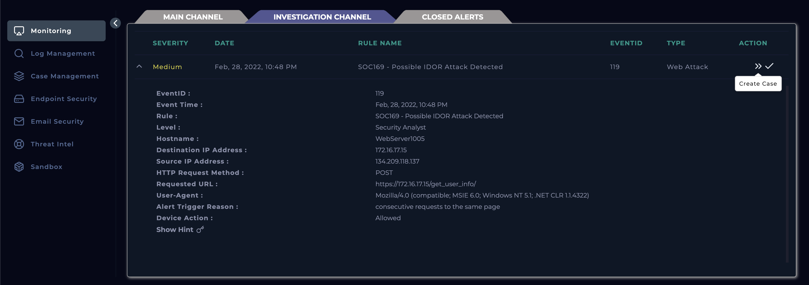
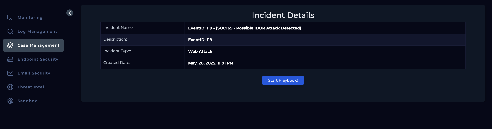
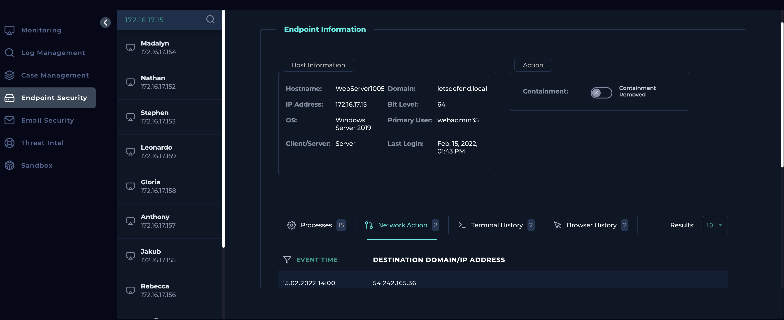
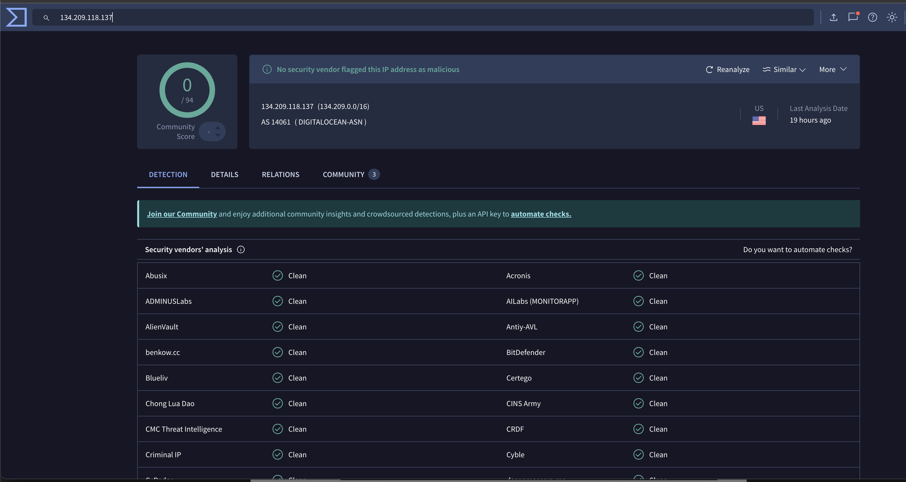
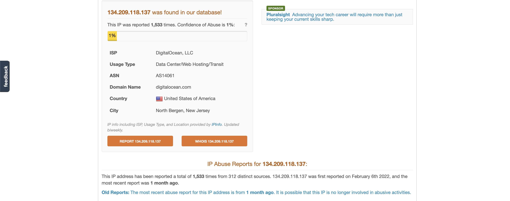
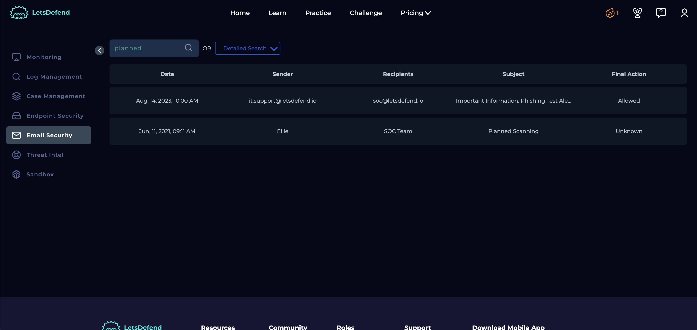
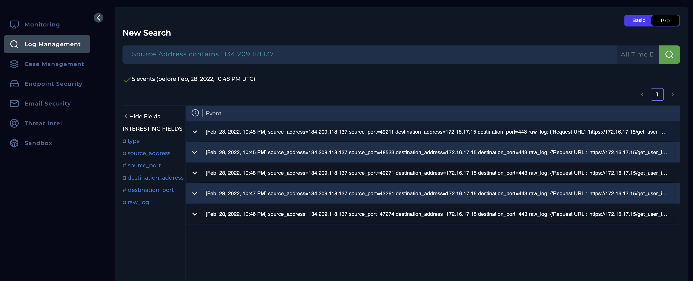
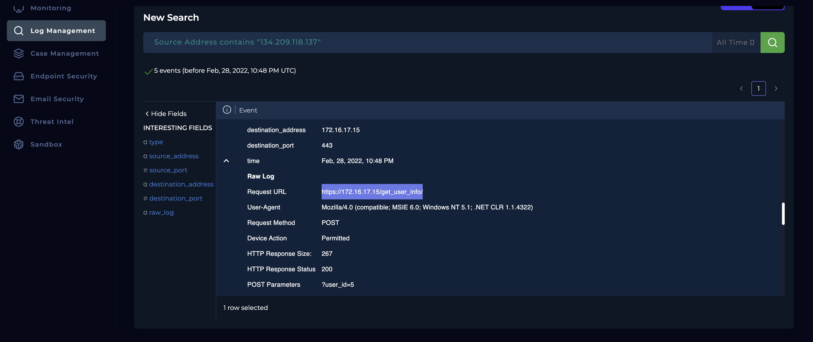
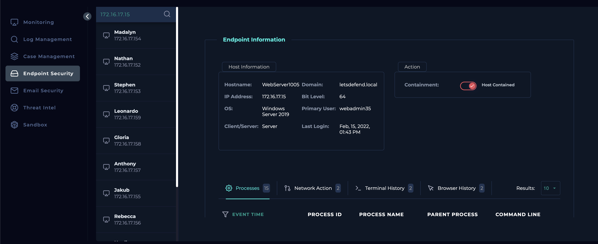

Objective
To investigate a possible Insecure Direct Object Reference (IDOR) attack detected by the system, identify whether unauthorized access to sensitive resources was attempted or achieved, analyse the request patterns and user behaviour involved, and determine if escalation, containment, or remediation actions are necessary.
Investigation steps
Reviewed the alert generated by the system to understand information such as source IP, destination IP, trigger, device action and HTTP request method. From this I understood the request was a POST HTTP request which was sent on 28/02/2022 by 134.209.118.137 to 172.16.17.15. The cause of the alert to be generated was multiple requests made to the same page.

Created a case to investigate this alert further and follow the playbook to ensure all steps are followed in order to conclude whether this is a false positive or a true positive.

Upon checking both IP addresses in the Endpoint module, I was able to understand the destination IP address belonged to an internal Windows web server which was last logged on Feb, 15, 2022, 01:43 PM, and the source seems to be an external device.

Examined the source IP address using the Virus Total site, which identified the IP address as non-harmful with a community score of 0 and can see the IP address is based in US. To further cross examine, analysed the IP using AbuseIPDB, which flagged the IP address being reported several times, with reference to SSH, Bruteforce, and Web app attack etc. Finally, was able to understand the ISP being Digital Ocean.


Using the Email Security module, checked internal mails to ensure this isn’t a planned test of the current security measures in place and this appeared to be negative.

Reviewed the logs through Log Management by filter by the source IP of the alert generated resulting in multiple records from 28th Feb 2022 (incident date). Examining th elog from 10.48pm that triggered the alert, we can see the source has been requesting a POST HTTPS request to https://172.16.17.15/get_user_info/ passing the parameter of user ID 5. Likewise, examining all other records we can see the source passing different user ID numbers to obtain user info about the corresponding user ID. The HTTP response code of 200 means the IDOR attack was successful.


As the attack seems to be successful, the next action was contain the internal webserver as it has been compromised.

Escalated to tier 2 support as the attack was successful and compromised the internal web server.
Analysis
On February 28, 2022, an alert titled SOC169 - Possible IDOR Attack Detected was triggered due to multiple POST HTTP requests sent from external IP address 134.209.118.137 to internal web server 172.16.17.15, targeting the /get_user_info/ endpoint. Investigation confirmed that the destination IP belonged to an internal Windows web server, while the source was identified as an external device hosted by DigitalOcean, reported in AbuseIPDB for malicious activities, though not flagged by VirusTotal. Email communications were reviewed to rule out any authorized security testing, and none were found. Log analysis revealed that the source repeatedly requested different user IDs via POST parameters and consistently received HTTP 200 responses, indicating that the server disclosed user data without proper authorization checks. Given the successful exploitation of an IDOR vulnerability, the internal web server was contained, and the case was escalated to Tier 2 for further investigation and remediation.
Key learnings
- Strengthened Knowledge of IDOR Vulnerabilities Gained hands-on experience identifying and analysing Insecure Direct Object Reference (IDOR) attacks, understanding how unauthorized access to internal resources can occur through parameter manipulation.
- Applied Multi-Tool Investigation Techniques Used various tools including Log Management, Email Security, VirusTotal, and AbuseIPDB to gather contextual evidence, confirm malicious behaviour, and validate IP reputation.
- Enhanced Log Analysis Skills Interpreted web server logs to trace a sequence of unauthorized POST requests with varying user IDs, confirming the attacker’s attempt to enumerate and extract sensitive user data.
- Improved Threat Validation Workflow Followed a structured investigation playbook to distinguish between a false positive and a legitimate threat, ensuring all relevant security modules were checked before concluding.
- Developed Incident Containment and Escalation Response Recognized signs of successful exploitation (HTTP 200 responses) and executed proper containment measures for the compromised web server, followed by escalation to Tier 2 analysts for deeper remediation.
- Reinforced Awareness of Threat Actor Behaviour Understood the importance of cross-referencing community-reported threats to uncover hidden risks, even when an IP is not flagged by all sources, improving situational threat awareness.